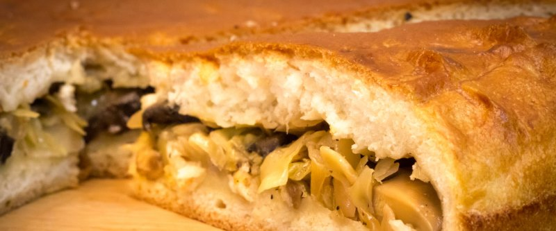

"Ленивый" пирог

- TODO
50 гр. дрожжей замочить в 1,5 ст. теплой воды. 2 яйца растереть с 1 ст. сахара, 120 гр. растопленного масла и дрожжами. Добавить 200 гр. сметаны, 0,5 ч.л. соли и 1,5 кг. муки.
Замесить не сильно тугое тесто. Разделить на две части. Одну раскатать с расчетом на бортики, положить в смазанную форму, а нее выложить начинку. Из другой сделать украшения/крышку сверху.
Поставить пирог на 1,5 часа в теплое место подходить, смазать яйцом, выпечь.
 Назад к списку рецептов
Назад к списку рецептов